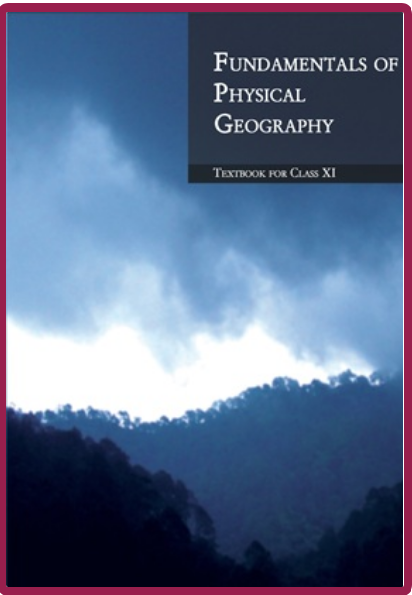

CLASS-11 GEOGRAPHY
FUNDAMENTALS
OF
PHYSICAL GEOGRAPHY
NCERT Solutions

Chapter-wise solutions CLASS-11(Geography)
FUNDAMENTALS OF PHYSICAL GEOGRAPHY
Chapter-1
Geography as a Discipline
Open →
Chapter-2
The Origin and Evolution of the Earth
Open →
Chapter-3
Interior of the Earth
Open →
Chapter-4
Distribution of Oceans and Continents
Open →
Chapter-5
Geomorphic Processes
Open →
Chapter-6
Landforms and their Evolution
Open →
Chapter-7
Composition and Structure of Atmosphere
Open →
Chapter-8
Solar Radiation, Heat Balance and Temperature
Open →
Chapter-9
Atmospheric Circulation and Weather Systems
Open →
Chapter-10
Water in the Atmosphere
Open →
Chapter-11
World Climate and Climate Change
Open →
Chapter-12
Water (Oceans)
Open →
Chapter-13
Movements of Ocean Water
Open →
Chapter-14
Biodiversity and Conservation
Open →